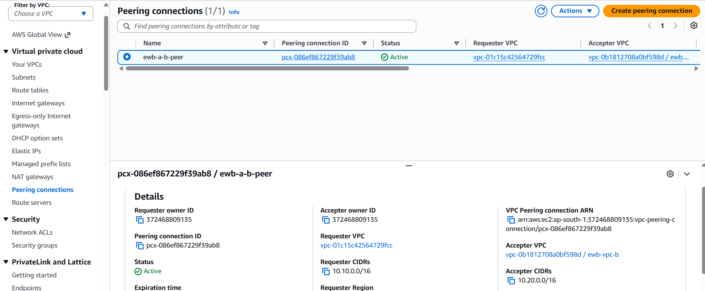
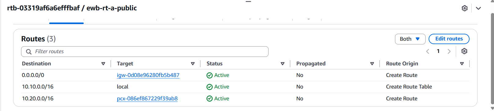
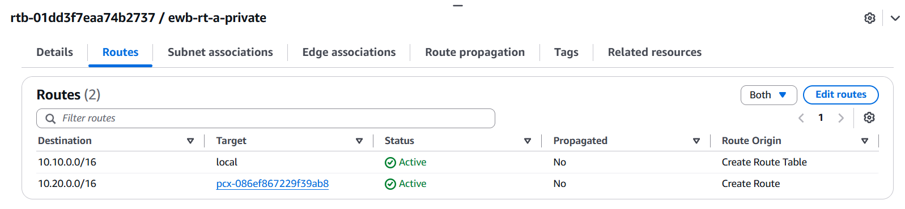
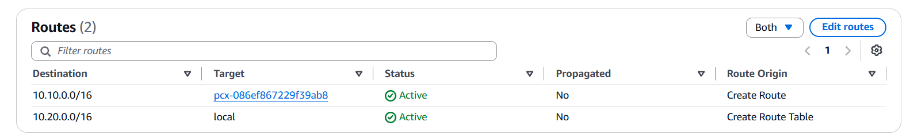
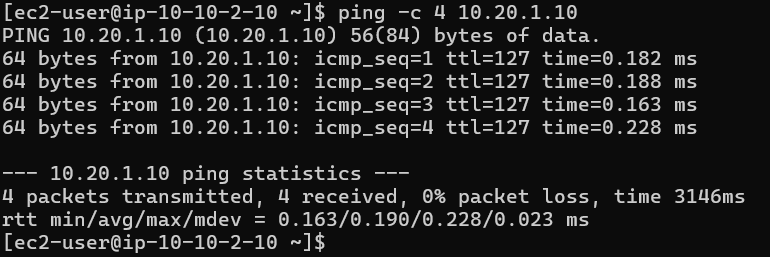
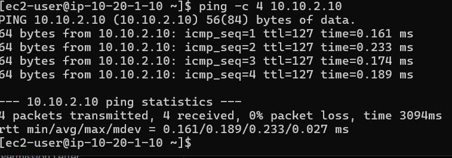
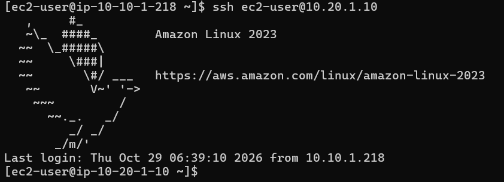
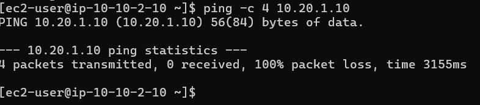
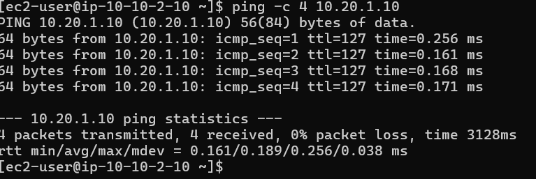

Two VPCs, one private connection
The networks use non-overlapping CIDR ranges. VPC Peering connects their private address spaces; route tables and security groups determine which traffic is allowed.
VPC-A
10.10.1.0/24
Bastion host · Internet Gateway
10.10.2.0/24
App-A · 10.10.2.10
VPC-B
10.20.1.0/24
App-B · 10.20.1.10
No public IPv4
Private application access via the bastion path.
Simplified logical diagram, not a live AWS topology. VPC peering is not a gateway to the other VPC's internet connection.
How the environment was built
The lab was assembled in small steps, with routing and access rules configured explicitly.
Build sequence
01 — Create the networks
Created two VPCs and their public/private subnet layout.
02 — Configure routing
Set subnet route-table associations and the required peering routes.
03 — Set up access
Configured the bastion host and security groups for administration and ICMP testing.
04 — Validate connectivity
Used SSH and ping to test access and private network communication.
Services and tools
The AWS services and command-line tools used in the lab.
Test the path, not just the configuration
A route alone does not guarantee connectivity. The return route, security-group rules and instance-level reachability also matter.
SSH connection to the private instance succeeded.
SSH connection to App-B through the bastion path succeeded.
Private ping test succeeded with 4 replies and 0% packet loss.
Reverse-direction ping succeeded during testing.
Configuration and terminal screenshots
These images are loaded directly from the repository's
evidence/ directory. Select an image to open the original.


















If an image does not appear, check that the filename and capitalization match the file in the repository exactly.
What this lab taught me
- VPC peering needs explicit routes in both directions for private communication.
- Security groups must allow the intended traffic and the correct source.
- A bastion host provides a controlled administration path to private instances.
- SSH access and ICMP connectivity are separate tests with different rules.
- Temporarily changing an ICMP rule helped demonstrate how filtering affects connectivity, then how restoring the rule recovers it.
- Evidence should show the actual configuration and commands, including limitations or tests that were not captured.
Security choices
- Application EC2 instances have no public IPv4 addresses.
- Bastion SSH ingress is restricted to a client IP range.
- Private-instance SSH ingress is limited to the bastion private IP.
- No private key or AWS credential belongs in this repository.
Scope and limitations
- This is a learning lab, not a production deployment.
- The architecture graphic is a simplified representation.
- The original pre-peering failure was not captured.
- Live AWS resources and their availability are not monitored by this website.
Explore the project repository
Read the README and browse the implementation evidence.